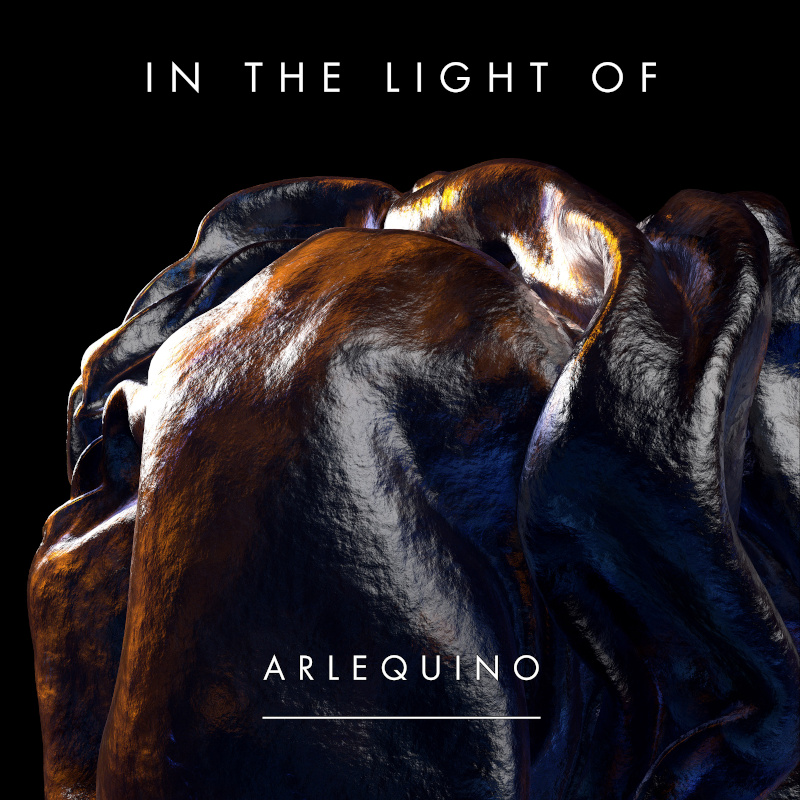
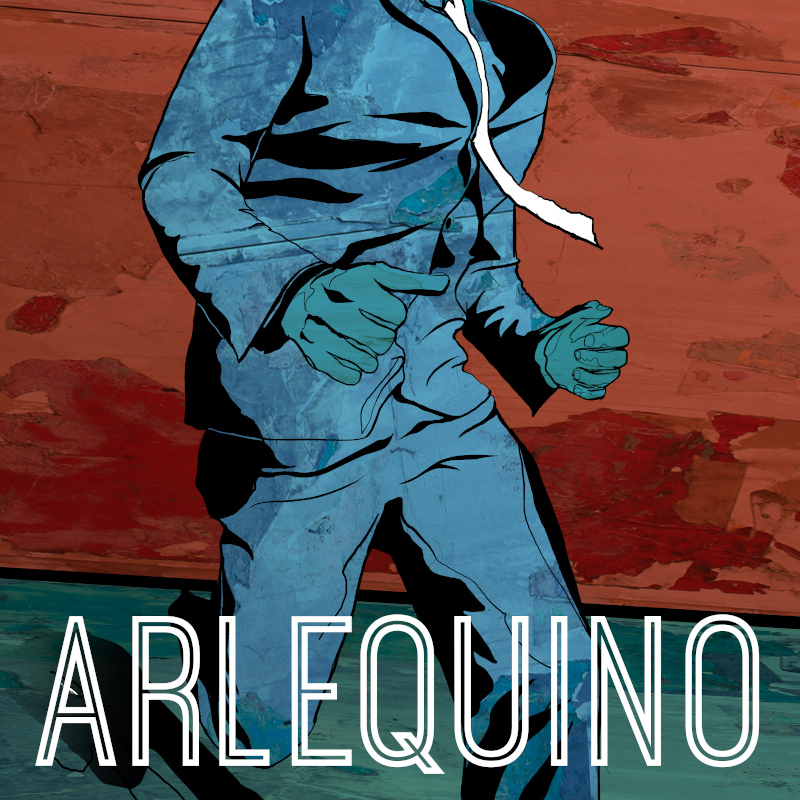

Did You Bring the Brain (EP) released on 18.09.2020
In the Light Of (Single) released on 09.09.2020

Debut EP (2015)

ARLEQUINO is an independent alternative-rock duo based in Amsterdam and Berlin.
Dark funky riffs and hooky melodies play against energetic drums, that will make you move.
The duo expands the traditional instrumentation of a rock band with custom-made electronics and software.
James Kneafsey (vocals and guitar) and Maarten Bonestroo (drums and vocals).